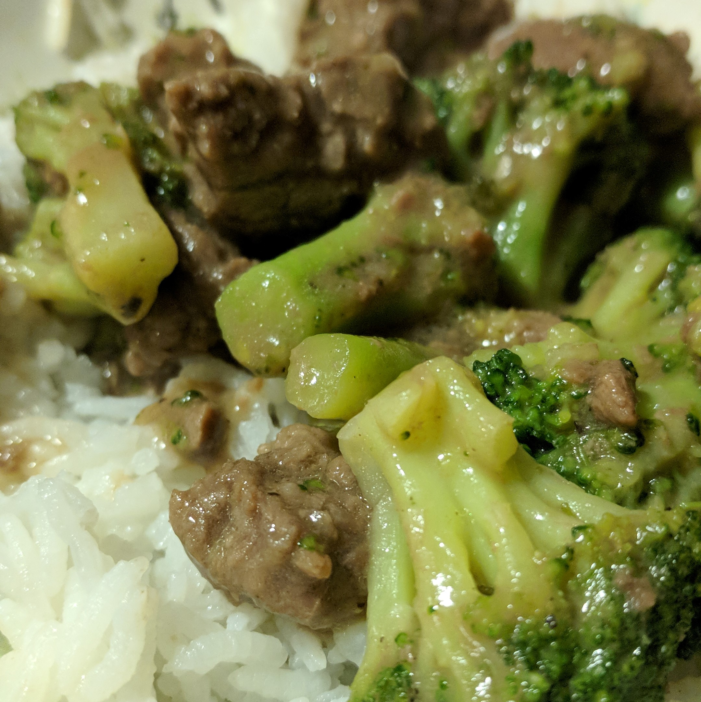

Aenean ornare velit lacus, ac varius enim lorem ullamcorper dolore aliquam.
Beef and Broccoli

Description
This is my go-to recipe when I want Chinese food without having to go out. Very easy and delicious. Substituting chicken for the beef works great too. Serve over rice.
Prep Time: 30 minutes Cook Time: 15 minutes Total Time: 45 minutes Servings: 4
Ingredients
| 1/3 Cup | Oyster Sauce |
| 1/3 Cup | Oyster Sauce |
| 2 teaspoons | Toasted Asian Sesame Oil |
| 1/3 Cup | Sherry |
| 1 Teaspoon | Soy Sauce |
| 1 Teaspoon | White Sugar |
| 1 Teaspoon | Corn Starch |
| 3/4 pound | Beef Round Steak |
| 3 Tablespoons | Vegetable Oil |
| 1 thin slice | Fresh Ginger Root |
| 1 Clove | Garlic |
| 1 Pound | Broccoli |
| 1 Cup | Rice |
Equipment
| Cookware | Wok* (Optional) |
| or a Large Pan | |
| Shallow Bowl | |
| Cutting Board | |
| Knife | |
| Rice Cooker* (Optional) | |
| or a small Pot | |
| Heating Element | Stovetop |
| Measurings | 1/3 Cup |
| 1 Teaspoon | |
| 1 Tablespoon |
Steps:
Step 1
-
If you do not have a rice cooker, start the rice by boiling 2 cups water in a pot. Then add the rice and cover.
Let it simmer for 20 minutes. ((Timer)) Step 2
-
Into a shallow bowl, measure:
- 1/3 cup Sherry,
- 1/3 cup Oyster Sauce,
- 1 teaspoon white sugar,
- 1 teaspoon cornstarch,
- 1 teaspoon soy sauce,
- and 2 teaspoons Sesame oil.
Whisk* these ingredients together until the sugar hasdissolved absorbed by something or to disappear into something else. Step 3
-
Slice the beef into 1/8th inch thick strips, and place the pieces into the bowl with sauce we just mixed. Stir the meat until each piece is well coated. Marinate* the beef in the refridgerator for 30 minutes.((Set Timer))
Step 4
-
While the beef marinates, prepare the broccoli by cutting it into florets.
Step 5
-
Next, peel and smash one clove* of garlic, then cut a thin slice from a ginger root.
Step 6
-
Next, measure about 3 tablespoons of vegetable oil into a Wok* or a large pan on the stove. Heat the oil over medium-high heat. Add the ginger slice and smashed garlic to the oil, and let them sizzle for 1 minute*. This flavors the oil. After sizzling, remove the garlic and ginger and throw them away.
Step 7
-
Add the broccoli florets to the hot oil. Toss and stir them until they are bright green and tender, about 7 minutes.((Timer))
Once the broccoli is done, remove it from the pan and put it in a separate bowl. Step 8
-
Add a dash more of oil to the pan. Then add the beef with the marinade.
Cook until the marinade becomes thick and the beef is no longer pink inside, about 7 minutes. ((Timer))
Mix the broccoli in with the beef. Step 9
-
Serve the Beef and Broccoli in a bowl over rice and enjoy!